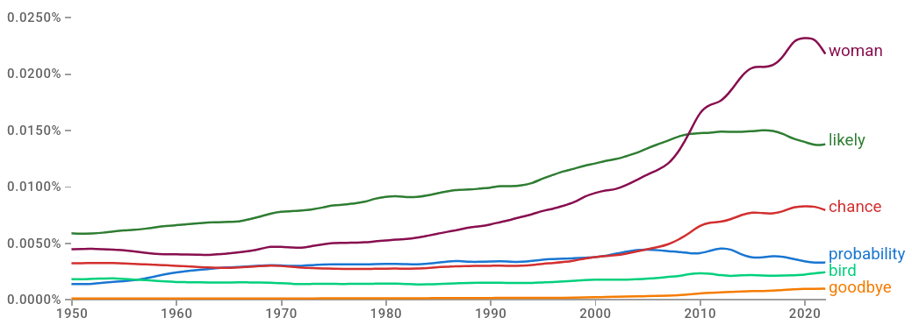

![]()
flowchart LR
A[Hard edge] --> B(Round edge)
B --> C{Decision}
C --> D[Result one]
C --> E[Result two]
There are many challenges in talking about the mitigation of (and adaptation to) potentially disastrous climate events when their probability and timing is poorly constrained. Here, I focus primarily on fundamental confusions about probability and how to use it in decision making. Many of these reflections are based on my experience as a university teacher and public speaker.
Everyday uncertainty
Probability is a mathematical measure for uncertainty. That sounds simple enough, but if you aren’t a mathematician (perhaps even if you are), browsing a list of mathematical measures will soon have you scratching your head. Most other measures will seem rather abstract.
So why do many of us feel that we have a good intuitive grasp on probability?
A quick word search on Google Books Ngram Viewer, a tool that lets you plot the frequency of the yearly count of words (or n-grams to be specific) found in Google’s text corpora, can give us an idea of how often probability-themed words are used. Here, we’re comparing “probability”, “chance”, and “likely” to common words like “goodbye”, “bird”, and “woman”.

This is no accurate representation of our daily conversations and thoughts, of course, but it is a good-enough measure to demonstrate how prevalent this concept of probability and uncertainty generally is. This is no surprise, given that every observation we make is incomplete and, consequently, comes with uncertainty. Therefore, every decision based on these incomplete observations is a decision made under uncertainty. A sense – or measure – of this uncertainty allows us to deal with it more confidently. Perhaps our daily use of some interpretation of probability gives us confidence in our intuitive grasp of the mathematical concept. Perhaps it comes from somewhere else. Regardless, it is often a wild overestimation of our ability to understand probability.
Probability isn’t intuitive
A game of dice
Probability isn’t intuitive – this is a point I always make at the beginning of my series of lectures on statistics and probability theory. A few years ago, I invested in a (supposedly) perfectly balanced and fair d20 – that’s a 20 sided die (for those of you who haven’t played classic pen-and-paper role-playing games). I sometimes roll it and record the outcomes, because it relaxes me. I know, I have no life – but at least I have a cool dataset!
I use the dataset for a little game: I show the outcomes after n rolls to my students in increments – the outcomes after a hundred rolls, a few hundred rolls, a thousand rolls, a few thousand rolls. After each presentation of the outcomes, I ask my students if they (still) believe the d20 is fair. When crossing the n=1000 mark and the number 7 still has the lead (was rolled most often), even those who weren’t troubled by 7’s earlier lead start believing in a bias. Typically, only those with a background in mathematics and statistics continue to insist that we can’t confidently call this a bias yet. Indeed, 7’s lead starts to disappear in later experiments, as it gets “diluted” by the new outcomes.
Let’s have a quick look at the statistics of it. (Skip to the box if that doesn’t sound appealing to you.)
NoteIs our d20 fair?
insert equations and fortran code
! exponential distribution probability density function
! with x=0.8 and lambda=0.5
fx = fsml_exp_pdf(0.8_dp, lambda=0.5_dp)
! generalised Pareto cumulative distribution function
! with modified shape (xi) and location (mu) parameters
fx = fsml_gpd_cdf(1.9_dp, xi=1.2_dp, mu=0.6_dp)I wrote that 7’s lead gets “diluted” to stress that the probability of rolling a 7 in later experiments is not impacted by having rolled it more than the other numbers in earlier experiments. The ~equal number of rolls of each number on a fair die is not achieved by changes in the probability of rolling non-7’s to make up for the many number of times 7 was rolled previously. Instead, 7’s earlier lead is simply “diluted” by new, more balanced outcomes as n increases. For some reason, the first (false) explanation is often favoured by students (and non-students) before they are exposed to theory. Maybe it reflects our desire for a universe (or something) that intervenes with intention, because anything else would overwhelm us and fill us with existential dread? (I’m sure there’s some research on this). In any case, this persistent misunderstanding demonstrates that we do not have a good natural ability to understand probability.
Entangling probability and cost
If you wait here for a few more minutes, there is a 20% probability of missing the bus.
Sure, we don’t want to miss our bus, but it’s not the end of the world if we do. If it means we can socialise a some more with the friends we haven’t seen in a while, missing the bus will have been worth it. Besides, 20% isn’t that high. We will probably get it anyway, even if we stay for a little longer.
If you wait here for a few more minutes, there is a 20% probability of being hit by the bus.
[I’m not sure how this would work, but let’s just accept the premise.]
The probability hasn’t changed, but our perception and assessment of it has, because there’s a risk of serious injury or death now. Suddenly, 20% is unreasonably high. That’s a higher probability than rolling a 6 on a 6-sided die!
Probability is abstract. It’s the associated costs of an outcome that makes it seem less abstract and more understandable. However, what we think we understand isn’t probability, but probability entagled with tangible costs. What complicates this further is that costs always have a subjective component. Consider the following: Even if we can quantify costs as a monetary loss of 100€, these 100€ will be negligible to some and unbearably high to others, depending on their financial situation. Consequently, this will create vastly different perceptions or assessments of the probability associated with this loss.
Where does that leave us with communication of probabilities and associated events in general?
It’s unreasonable to expect to achieve widespread statistical literacy, so I don’t share some of my colleagues’ opinions that this is the solution – not that I would mind if it did happen. So if that’s not an option, how do we learn to effectively communicate probability and cost as a package? How do we account for subjective factors? How do we make costs tangible when most have not yet experienced what is to come?